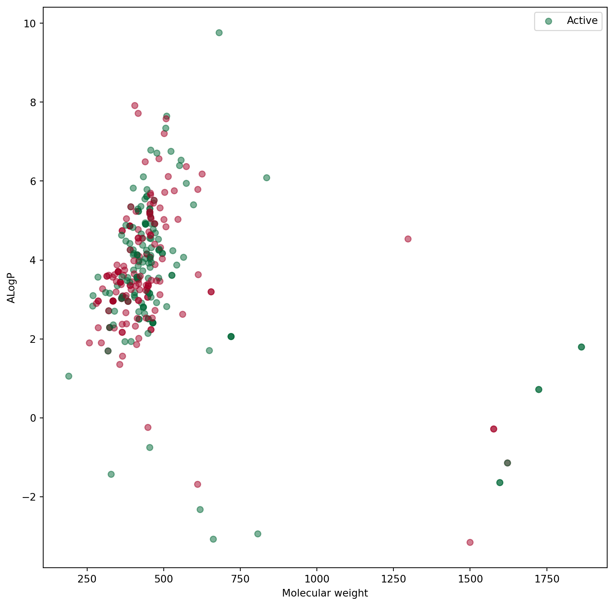
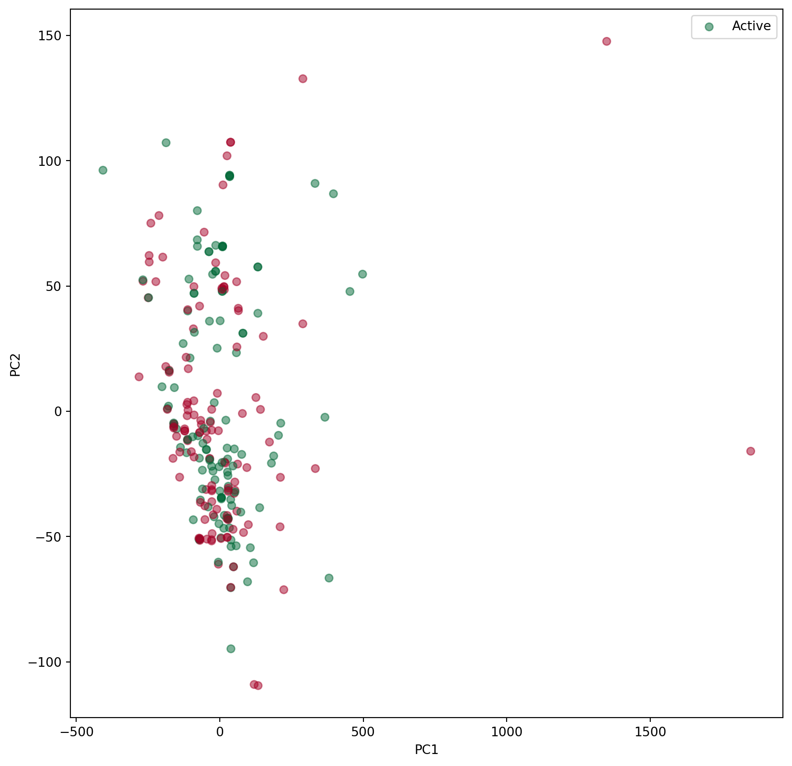
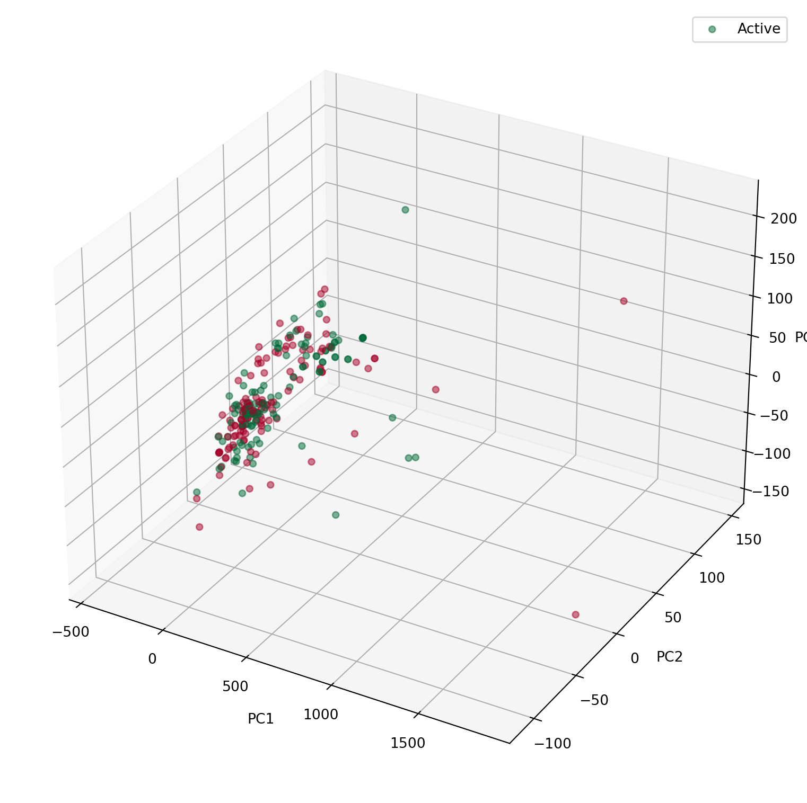
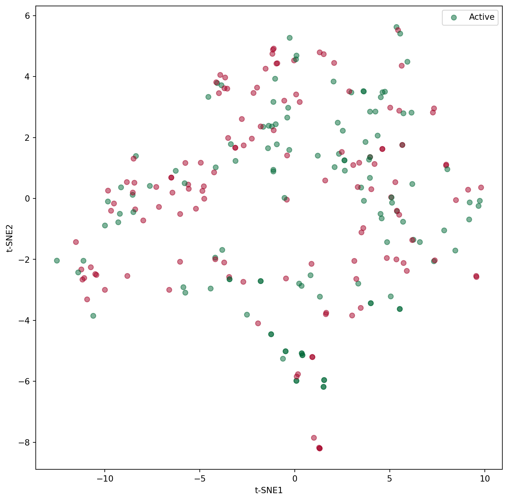
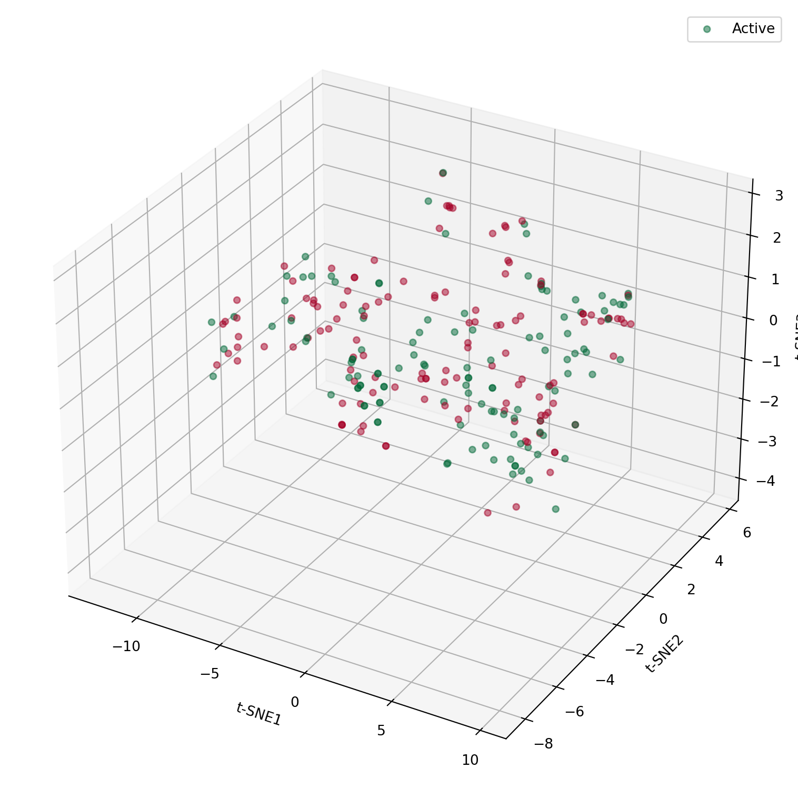

![]()
import pandas as pd
import numpy as np
import matplotlib.pyplot as plt
import seaborn as sns
import sklearn as sk
import sklearn.decomposition as skd
import sklearn.manifold as skm
# IMPORT CUSTOM MODULES
import sys
sys.path.append("../src")
import utils.molUtils as molUtils
from utils.molUtils import calculate_qed_propertiesChemical space and diversity
# DIRECTORIES
input_path = "../data/processed/"
figure_path = "../../Memoria/figures/"
# FILES
smiles_file = "smiles_activity.csv"
molecular_descriptors_file = "CHEMBL4523954_descriptors.csv"# LOAD DATA
smiles = pd.read_csv(input_path + smiles_file)
molecular_descriptors = pd.read_csv(input_path + molecular_descriptors_file)1 CHEMICAL SPACE AND DIVERSITY
To represent the chemical space of the smiles, ALogP and molecular weight are used as descriptors. ALogP is the logarithm of the partition coefficient between octanol and water, which is a measure of the lipophilicity of the molecule. Molecular weight is the sum of the atomic weights of the atoms in the molecule.
# CALCULATE QED
molecules_qed = molUtils.calculate_molecule_set(
smiles, "canonical_smiles", calculate_qed_properties
)# REPRESENT MOLECULES WITH X = MOLECULAR WEIGHT AND Y = ALOGP WITH COLOR DEPENDING ON ACTIVITY GREEN FOR ACTIVE AND RED FOR INACTIVE AND LEGEND FOR EACH COLOR
plt.figure(figsize=(10, 10))
plt.scatter(
molecules_qed["MW"],
molecules_qed["ALOGP"],
c=molecules_qed["activity"],
cmap="RdYlGn",
alpha=0.5,
)
plt.xlabel("Molecular weight")
plt.ylabel("ALogP")
plt.legend(["Active", "Inactive"])
plt.savefig(figure_path + "chemical_space.png")
plt.show()
2 PCA ANALYSIS OF MOLECULAR DESCRIPTORS
# CALCULATE PCA FOR MOLECULAR DESCRIPTORS
pca = skd.PCA(n_components=3)
pca.fit(molecular_descriptors.drop(["activity"], axis=1))
molecular_descriptors_pca = pd.DataFrame(
pca.transform(molecular_descriptors.drop(["activity"], axis=1))
)# REPRESENTATION OF 2D PCA
plt.figure(figsize=(10, 10))
plt.scatter(
molecular_descriptors_pca[0],
molecular_descriptors_pca[1],
c=molecular_descriptors["activity"],
cmap="RdYlGn",
alpha=0.5,
)
plt.xlabel("PC1")
plt.ylabel("PC2")
plt.legend(["Active", "Inactive"])
plt.savefig(figure_path + "pca2D.png")
plt.show()
# REPRESENTATION OF 3D PCA
fig = plt.figure(figsize=(10, 10))
ax = fig.add_subplot(111, projection="3d")
ax.scatter(
molecular_descriptors_pca[0],
molecular_descriptors_pca[1],
molecular_descriptors_pca[2],
c=molecular_descriptors["activity"],
cmap="RdYlGn",
alpha=0.5,
)
ax.set_xlabel("PC1")
ax.set_ylabel("PC2")
ax.set_zlabel("PC3")
plt.legend(["Active", "Inactive"])
plt.savefig(figure_path + "pca3D.png")
plt.show()
3 t-SNE ANALYSIS OF MOLECULAR DESCRIPTORS
# CALCULATE t-SNE FOR MOLECULAR DESCRIPTORS
tsne = skm.TSNE(n_components=3)
molecular_descriptors_tsne = pd.DataFrame(
tsne.fit_transform(molecular_descriptors.drop(["activity"], axis=1))
)# REPRESENTATION OF 2D t-SNE
plt.figure(figsize=(10, 10))
plt.scatter(
molecular_descriptors_tsne[0],
molecular_descriptors_tsne[1],
c=molecular_descriptors["activity"],
cmap="RdYlGn",
alpha=0.5,
)
plt.xlabel("t-SNE1")
plt.ylabel("t-SNE2")
plt.legend(["Active", "Inactive"])
plt.savefig(figure_path + "tsne2D.png")
plt.show()
# REPRESENTATION OF 3D t-SNE
fig = plt.figure(figsize=(10, 10))
ax = fig.add_subplot(111, projection="3d")
ax.scatter(
molecular_descriptors_tsne[0],
molecular_descriptors_tsne[1],
molecular_descriptors_tsne[2],
c=molecular_descriptors["activity"],
cmap="RdYlGn",
alpha=0.5,
)
ax.set_xlabel("t-SNE1")
ax.set_ylabel("t-SNE2")
ax.set_zlabel("t-SNE3")
plt.legend(["Active", "Inactive"])
plt.savefig(figure_path + "tsne3D.png")
plt.show()